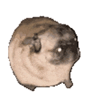

Hello! and Welcome to the home page.
Navigation
Go to Boards Page
Go to Game Page
Go to Strings/Audio Page
Go to Table Page
Return to Home Page
If you're reading this...
than you can understand english
Start
Stop
